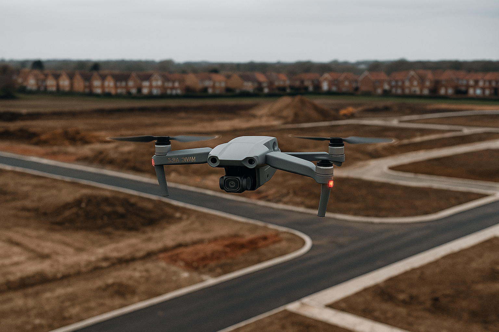
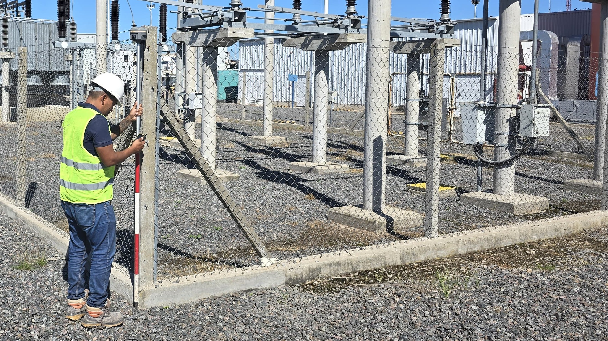

Latitud Sur es un estudio profesional con base en La Plata dedicado a brindar servicios de topografía a todo el país y de agrimensura en la provincia de Buenos Aires. Con más de una década de experiencia combinada, nos especializamos en proyectos urbanos, rurales, viales e industriales, ofreciendo soluciones técnicas precisas y acompañamiento profesional en cada etapa del trabajo.
Ingeniero Agrimensor con más de 10 años de experiencia en obras civiles, viales e hidráulicas. Ha desarrollado y ejecutado proyectos integrales desde el plano hasta el campo, realizando estados parcelarios, deslindes, amojonamientos, nivelaciones, replanteos de obra, traslados de cota, monitoreos y vuelos con dron, así como producción de planos CAD.
Agrimensor con más de una década de trayectoria en campo, especializado en obras públicas y privadas. Participó en numerosos proyectos topográficos y catastrales, incluyendo parcelamientos, nivelaciones, replanteos, obras hidráulicas, seguimiento con dron, y ejecución técnica desde el relevamiento hasta la documentación final.

Subdivisiones y gestiones catastrales para desarrollos inmobiliarios.

Nivelaciones para planificación de escurrimientos y drenajes.

Marcado de ejes y cotas para obras civiles y viales.

Topografía para mantenimiento y estabilización de caminos rurales.

Subdivisiones y proyectos técnicos para zonas industriales.
Teléfono: (0221) 557-3180
Email: martinmoccia@gmail.com
Dirección: Av. 7, 525 - La Plata, Buenos Aires
WhatsApp: Enviar mensaje